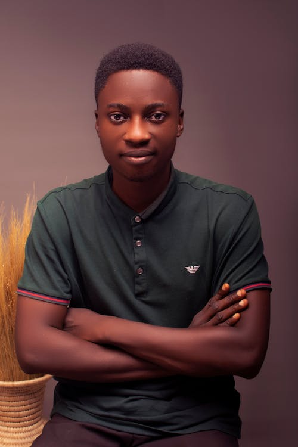
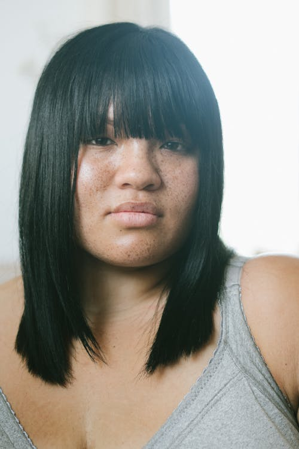
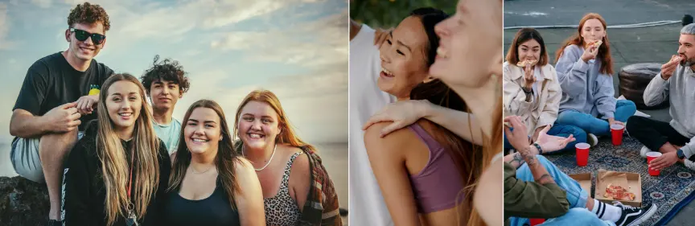

Jeg er 25 år og havde røget, siden jeg var 20. I flere år prøvede jeg at stoppe, men nikotinen havde et stærkere greb i mig, end jeg ville indrømme. Hver gang jeg forsøgte, faldt jeg tilbage igen. En dag fandt jeg en kampagne, hvor professionelle med mange års erfaring i unges nikotinstop guidede mig gennem et rygestopforløb. For første gang følte jeg mig forstået og støttet. Med deres hjælp lærte jeg at håndtere trangen, ændre mine rutiner og bygge nye vaner op. Det var hårdt, men jeg stod ikke alene. Og pludselig en dag gik det op for mig, at jeg faktisk var stoppet. Det føltes som at få friheden tilbage. Jeg troede aldrig, jeg kunne – men jeg gjorde det.
Jeg er 18 år og begyndte at ryge i 1.g. Dengang var det mest til fester eller for at være en del af det sociale. Men her i 2.g gik det op for mig, at det ikke længere handlede om det. Jeg røg, når jeg var presset over afleveringer, når jeg var nervøs før prøver, og endda når jeg var glad. Jeg var blevet afhængig, og det skræmte mig. En dag hørte jeg om en kampagne, da der var et oplæg på skolen. De fortalte om aktiviteter for unge, der kæmpede med det samme som mig. Jeg besluttede at tage med. Det viste sig at være det bedste, jeg kunne have gjort. At møde andre unge, der stod i præcis den samme situation, gjorde hele forskellen. Vi delte historier, støttede hinanden og fandt ud af, at ingen af os var alene. Fællesskabet gjorde noget ved mig. Det tog styrken ud af afhængigheden. Og for første gang følte jeg, at jeg faktisk kunne stoppe. Så jeg gjorde det. Jeg stoppede med at ryge for alvor, og jeg har ikke set mig tilbage siden.


Jeg er 21 år og har taget snus i flere år. Det gik langsomt op for mig, at jeg ikke længere bare brugte det “en gang imellem”. Jeg var desperat efter snus hver dag. Hvis jeg ikke kunne finde min dåse, blev jeg sur og kort for hovedet nogle gange gik det ud over mine kollegaer, og andre gange over min kæreste derhjemme. En dag sendte han mig et link til en kampagne og sagde, at han syntes, jeg burde tale med nogen, eller måske starte et forløb. Det ramte mig hårdt, for jeg kunne mærke, at min afhængighed ikke kun påvirkede mig, men også dem jeg elsker. Så jeg tilmeldte mig kampagnen og begyndte et stopforløb. Det var første gang, jeg virkelig tog min afhængighed alvorligt. Og selv om det var svært, føltes det også som det første rigtige skridt mod at få mig selv, og mit forhold tilbage.

Klar til aftener fyldt med sjov og spas? Men også aftenener med dybe samtaler og en følelse af samvær med folk præcis som dig.
En rolig fælles gåtur i en park eller ved vandet, hvor deltagerne går i små grupper og snakker om deres udfordringer, fremskridt og mål.
Efter gåturen kan man slutte af med gratis te/vand og små reflektionskort, som hjælper samtalen i gang.
TilmeldEt kreativt fællesrum, hvor deltagerne kan male på lærred, tegne eller lave små “nikotinfri vision boards”.
Det giver noget at lave med hænderne, især godt for dem, der normalt bruger cigaretter eller snus.
TilmeldEn aften med sjove spil som Uno, Partners, Codenames eller små icebreaker lege. Der bliver plads til både grin og seriøs snak, og fokus er på at være social og skabe et fællesskab med hindanen.